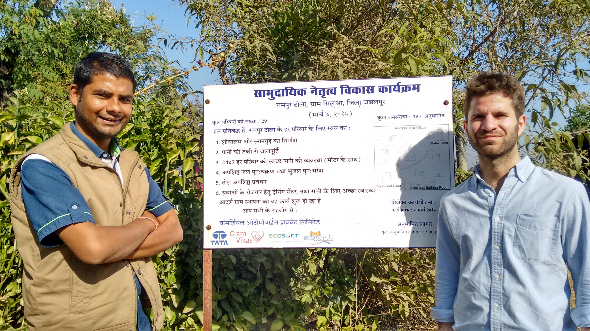

We are looking for a team member with experience in programming in Java. This is to help develop the app as fast as possible.
The EWBOx Medical Project aims to develop a cost-effective high-impact diagnostic device for Malaria detection in Peru, South America. Malaria is fatal for over one million victims every year across the tropical regions of Sub-Saharan Africa and South America. Early detection is paramount to treating the disease effectively and saving lives.
Malaria is transmitted by mosquitoes and is most common in tropical and low-altitude environments. Communities living in these tropical regions of South America, particularly children and pregnant women, are most vulnerable to the fatal outcome of this disease, and would therefore benefit most from an affordable Malaria diagnostic device. EWBOx Medical is comprised of one Project Manager (PM) and six Researchers. Each individual has a unique skill set, ranging from those engaged in Biomedical Engineering doctoral study to undergraduate level Medicine, which naturally determines the allocation of work.

Safely recording and transferring patient data continues to remain a serious obstacle in the fight against many endemic diseases in developing countries. The Medical Team has been working with charity Amazon Promise to combat this issue in the case of malaria in Peru. Currently, medical malaria records are maintained through paper documents, which are easily lost during the transfer from rural villages to urban centres. To improve this, the Medical Team has been designing a programme using the open source platform EpiCollect+, which will enable healthcare staff to record data in real-time via mobile or computer through an simple interface. On transport to larger medical facilities, data can be uploaded from devices, stored via the internet, and then downloaded just before staff revisit the rural area. At the same time, the Medical Team are coding new software, which will provide enhanced features including security and systematic patient ID recognition. It is hoped that this work will become an invaluable resource both for patient care and for epidemiological research into malaria prevalence within this region.
If you would be interested in joining our team, please contact recruitment@ewbox.org